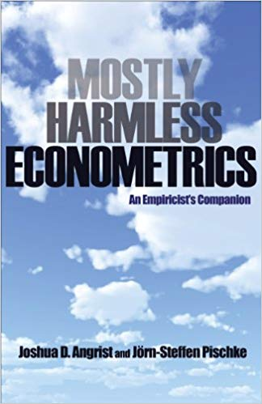
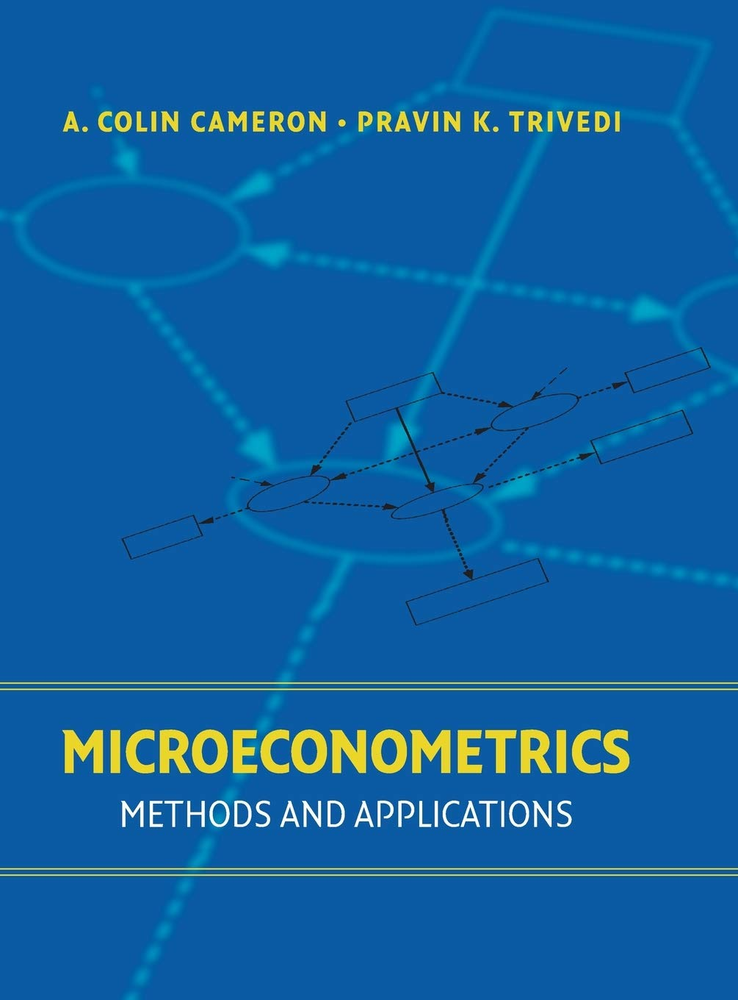
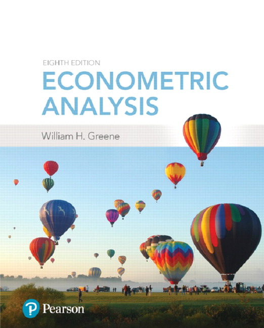
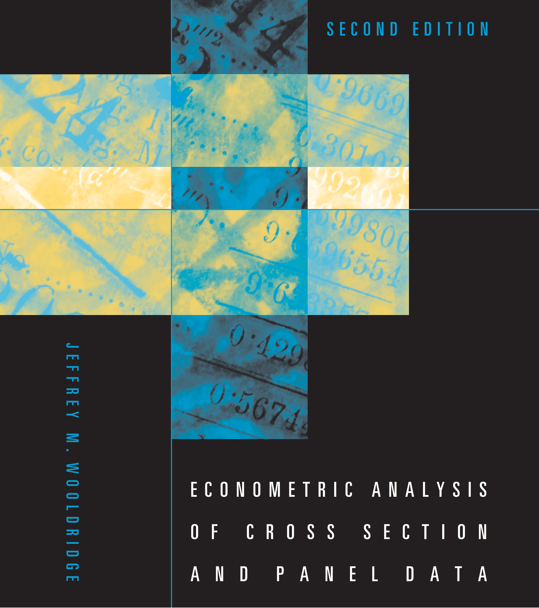
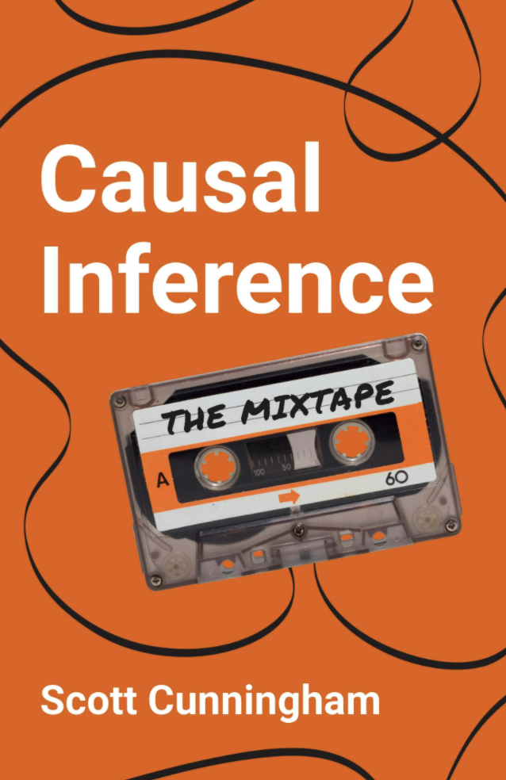
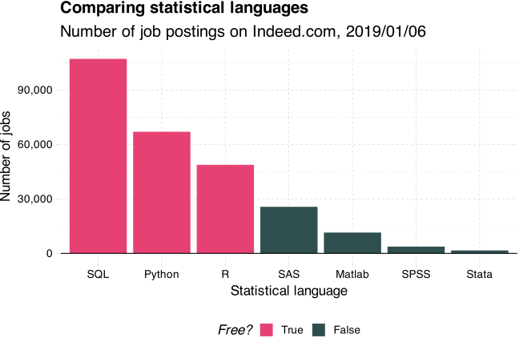
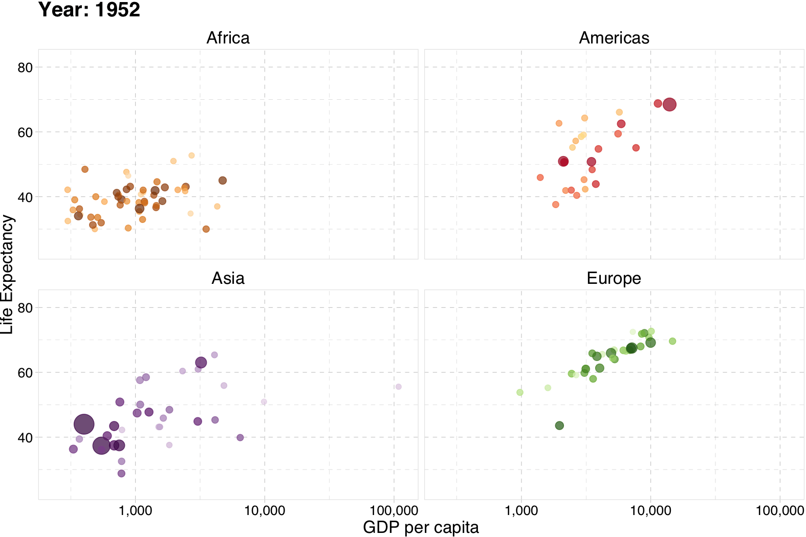

# 3x2 matrix filled w/ zeros
matrix(
data = 0, nrow = 3, ncol = 2
)#> [,1] [,2]
#> [1,] 0 0
#> [2,] 0 0
#> [3,] 0 0REC 607, Set 01
Goal: Deepen understandings/intuitions of (1) causality and (2) inference.
. . .
. . .
: Understand human, social, and/or economic behaviors.
. . .
. . .
: Learn methods, tools, skills, and intuition required for research.
. . .
. . .
: Build a toolbox of empirical methods, tools, and skills to that combine data and statistical insights to test and/or measure theories and policies.
. . .
. . .
: You should be thinking about this question throughout your program/work/life.
. . .
Self awareness and mental health are important.
For many of people, this course marks a big shift in how school works.
. . .
The material and tools are pivotal for a lot of what you will do in the future.
. . .
Take responsibility for your education and career.
Q What is the difference between econometrics and data science?
. . .
Qv2 Is there anything special about econometrics?
. . .
A1/∞ Causality.😸
. . .
Note: There are large parts of econometrics that focus on prediction rather than causality (e.g., forecasting and prediction—see Jeremy Piger).†
. . .
Causality plays a huge role in modern applied econometrics (esp. in micro).
😸 Sources for this Q and A: Dan Hammer and Max Auffhammer.
† Also: Machine learning (e.g., my ML and econometrics course here at UO)
Toward this end—causality—we will use two books (favoring MHE).
Mostly Harmless Econometrics
Angrist and Pischke, 2008

MHE Buy now. Read this book.
The standard for causal metrics.
Could use an update.
Microeconometrics:
Methods and Applications
Cameron and Trivedi, 2005

We will use more C&T than Greene.
While you’re at it, buy one or two more…
Econometric Analysis
Greene, 2018

Encyclopedic reference.
Econometric Analysis of Cross Section and Panel Data
Wooldridge, 2010

This book has some great sections.
Two more “free” books…
Introduction to Causal Inference
Brady Neal, 2020
Under development but great.
Targets folks from prediction.
Causal Inference: The Mixtape
Scott Cunningham, 2021

Relatively new.
Includes R, Stata, and Python code.
First, we believe that empirical research is most valuable when it uses data to answer specific causal questions, as if in a randomized clinical trial. This view shapes our approach to most research questions. In the absence of a real experiment, we look for well-controlled comparisons and/or natural quasi-experiments. Of course, some quasi-experimental research designs are more convincing than others, but the econometric methods used in these studies are almost always fairly simple.
Mostly Harmless Econometrics, p. xii (color added)
. . .
1. This ideology inherently compares research to “gold-standard” RCTs.
. . .
2. The methods are usually (relatively) straightforward (after training).
What is the causal relationship of interest?
How would an ideal experiment capture this causal effect of interest?
What is your identification strategy?
What is your mode of inference?
. . .
Note: Other questions also matter for developing quality research, e.g.,††
† See MHE, chapter 1.
†† Credit for these questions goes to Reed Walker.
Descriptive exercises can be very interesting and important, but in modern applied econometrics, causality is king.
Why?
. . .
Causal relationships directly test theories of how the world works.
Causal relationships provide us with counterfactuals—how the world would have looked with different sets of policies/circumstances.
. . .
🚧 If you can’t clearly and succinctly name the causal relationship of interest, then you may not actually have a research project.
Some classic examples…
Labor and Education
How does an additional year of schooling affect wages?
Political Economy and Development
How do democratic institutions affect economic development?
Environment and Urban
Do the poor receive substantive benefits from environmental clean ups?
Health, Crime, and Law
Do gun-control laws actually reduce gun violence?
Describing the ideal experiment helps us formulate
the exact causal question(s)
the dimensions we want to manipulate
the factors we need to hold constant
. . .
🚧 These ideal experiments are generally hypothetical, but if you can’t describe the ideal, it will probably be hard to come up with data and plausible research designs in real life.
. . .
Angrist and Pischke call questions without ideal experiments fundamentally unanswerable questions (FUQs).
Examples of potentially answerable questions…
. . .
Examples of challenging questions to answer (potentially unanswerable?)…
Sometimes even simple-sounding policy questions turn out to be fundamentally unanswerable.
. . .
Example of a fundamentally unanswerable question:
Do children perform better by starting school at an older age?
. . .
Proposed ideal experiment
. . .
Problem
. . .
Kids who started later are older in 2nd grade. Older kids do better. Do we want the effect of starting later or just being older?
Sometimes even simple-sounding policy questions turn out to be fundamentally unanswerable.
Example of a fundamentally unanswerable question:
Do children perform better by starting school at an older age?
Proposed ideal experiment2.0
. . .
Problem2.0
. . .
The two groups will have been in school for different numbers of years (1 vs. 2). More school should mean better scores.
Sometimes even simple-sounding policy questions turn out to be fundamentally unanswerable.
Example of a fundamentally unanswerable question:
Do children perform better by starting school at an older age?
Central problem: Mechanical links between ages and time in school.
(Start Age) = (Current Age) – (Time in School)
No experiment can separate these effects (for school-age children).
This question✋ describes how you plan to recover/observe as good as random assignment of your variable of interest (approximating your ideal experiment) in real life.
✋ You will hear this question asked a lot.
Examples
A brief history
The term “identification strategy” goes back to Angrist and Krueger (1991).
However, the comparison of ideal and natural experiments goes back much farther to Haavelmo (1944)…
A design of experiments… is an essential appendix to any quantitative theory. And we usually have some such experiment in mind when we construct the theories, although-unfortunately-most economists do not describe their design of experiments explicitly. If they did, they would see that the experiments they have in mind may be grouped into two different classes, namely, (1) experiments that we should like to make to see if certain real economic phenomena—when artificially isolated from “other influences”—would verify certain hypotheses, and (2) the stream of experiments that Nature is steadily turning out from her own enormous laboratory, and which we merely watch as passive observers. In both cases the aim of the theory is the same, to become master of the happenings of real life.
Haavelmo, 1944 (color added)
Historically, inference—standard errors, confidence intervals, hypothesis tests, etc.—has received much less attention than point estimates. It’s becoming more important (more than an afterthought).
Which population does your sample represent?
How much noise (error) exists in your estimator (and estimates)?
How much variation do you actually have in your variable of interest?
. . .
Without careful inference, we don’t know the difference between
Class Attend/participate. Read assigned readings—especially papers.
Lab Practice applying our in-class content in R with Shaoda/me. Attend.
Problem sets 3+ problem sets mixing theory and applications in R.
No midterm! Huzzah.
Other grades Two projects plus a two-part final!
The R project website:
R is a free software environment for statistical computing and graphics. It compiles and runs on a wide variety of UNIX platforms, Windows and MacOS.
. . .
What does that mean?
R was created for the statistical and graphical work required by econometrics.
R has a vibrant, thriving online community (e.g., Stack Overflow).
Plus it’s free and open source.
1. R is free and open source—saving both you and the university 💰💵💰.
2. Related: Outside of a small group of economists, private- and public-sector employers favor R over Stata and most competing softwares.
3. R is very flexible and powerful—adaptable to nearly any task, e.g., ’metrics, spatial data analysis, machine learning, web scraping, data cleaning, website building, teaching. My website, the TWEEDS website, and these notes all came out of R.

4. Related: R imposes no limitations on your amount of observations, variables, memory, or processing power. (I’m looking at you, Stata.)
5. If you put in the work,🖥️ you (and your students!) will come away with a valuable and marketable tool.
🖥️: Learning R definitely requires time and effort.
6. I 💖 R

Installing R is fairly straightforward, but it occasionally involves challenges for older computers.
Step 1: Download (r-project.org) and install R for your operating system.
Step 2: Download (rstudio.com) and install RStudio Desktop for your operating system.
DataCamp has a nice tutorial on installing R and RStudio for Windows, Mac, and Linux operating systems.†
† I applied for free access to DataCamp for our class. I’ll let you know when I hear back.
Let’s get started. There are a few principals to keep in mind with R:
1. Everything is an object.
foo
2. Every object has a name and value.
foo <- 2
Let’s get started. There are a few principals to keep in mind with R:
1. Everything is an object.
foo
2. Every object has a name and value.
foo = 2
3. You use functions on these objects.
mean(foo)
4. Functions come in libraries (packages)
library(dplyr)
5. R will try to help you.
?dplyr
6. R has its quirks.
NA; error; warning
Functions operate on objects, but they need some guidance—arguments.
. . .
Example: ex_fun(arg1, arg2, arg3)
. . .
Our function is named ex_fun.
This function takes three arguments: arg1, arg2, arg3.
You can tell R which values to assign to which arguments:ex_fun(arg1 = 13, arg2 = 25, arg3 = 7) (probably best practice)
… or R will assign the values using the arguments’ defined order:ex_fun(13, 25, 7) (shorter/lazier but has the same result)
You must assign a name to a function’s outputted object (to keep it).
matrixWe will need to create matrices in this class.
Enter: R’s matrix() function!
Q How do we know which arguments a function requires/accepts?
. . .
A ?
. . .
Meaning you can type ?matrix into your R console to find the help file associated with the functions/objects named matrix.
. . .
Double bonus: Use ??matrix to perform a fuzzy search for the term matrix in all of the help files.
matrixQ How do we know which arguments a function requires/accepts?
A2 RStudio will also try to help you.
matrix) into the console; RStudio will show you some info about the function.matrix()), press tab, and RStudio will show you a list of arguments for the function.